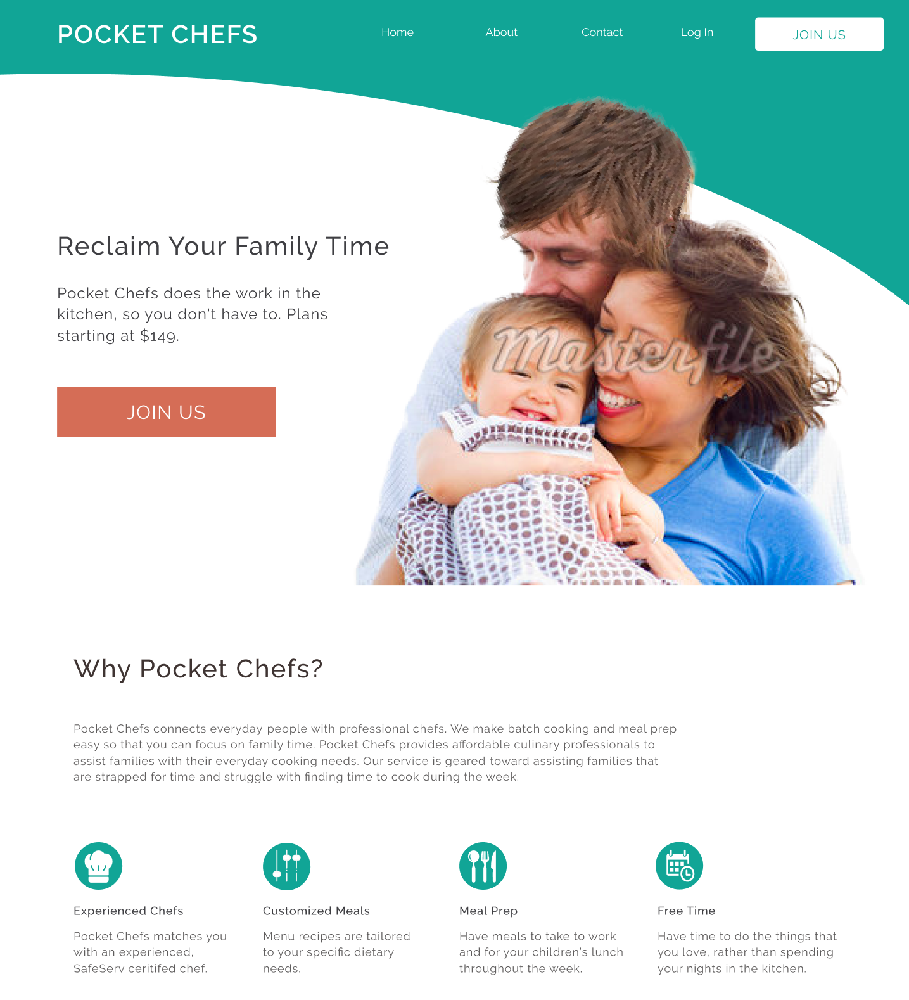

In support of the research given, I focused on the following:
Design Roles
Sole Designer
- UX Design
- Visual Design
- UX Writer
Duration
- 3 weeks
Deliverables
- User Stories
- User Flows
- Prototype
- Visual Design
Tools & Software
User Research
Some user research had been performed prior to my contracted position to identify key pain points.To supplement what had been identified, I reviewed the website and identified additional pain points as well that could be addressed in the new design.
- Product is unclear: cooking lessons or personalized chef?
- Site navigation confusing
- No visible pricing info
- Booking process unclear
- Unsure what resources chef needs
User Personas
Based on the user research that had been conducted, I developed the following user personas to help guide the visual design.
Working Parent
Motivation
Provide healthy and quick meal prep for family
Spend less time in the kitchen and more time with family
Frustration
Don't know what groceries to buy
Lack of time and resources
Inexperience in the kitchen
Young Professional
Motivation
Cheaper/healthier to meal prep
Can create something can't find at restaurant
Frustration
Cleaning up takes time
Wants more variety in meals
Working Parent
Motivation
Provide healthy and quick meal prep for family
Spend less time in the kitchen and more time with family
Frustration
Don't know what groceries to buy
Lack of time and resources
Inexperience in the kitchen
Young Professional
Motivation
Cheaper/healthier to meal prep
Can create something can't find at restaurant
Frustration
Cleaning up takes time
Wants more variety in meals
User Flows
I developed a flow diagram to envision how users would interact with the site. Keeping in mind we wanted to ensure quick conversion rates, I eliminated unnecessary links in the home page and contained the site map to three areas: landing page, package descriptions, and onboarding screens. For returning users, I aimed to make the accounts page clearly accessible from the home screen.
Onboarding
Wireframes
Before developing my wireframes, I did a few quick sketches to visualize and play around with content:

1
In the old design, log-in and sign-up were the same button which could cause confusion and clumsy navigation. The new design separates these actions.
2
The original landing page did not have a CTA above the fold. The new design utilizes the space to create an F-shape that emphasizes the CTA.
3
Visitors are immediately given a clear overview of the product to increase interest.
4
User research indicated that there was confusion about the booking process. A simple step-by-step guide is provided on the landing page as well as a "How To" video to address this.
5
To build trust and authenticity, an image of a chef is provided on the landing page.
6
Pricing information is displayed clearly on the landing page unlike in the original design.
7
Landing page ends with a CTA.
1
In the old design, log-in and sign-up were the same button which could cause confusion and clumsy navigation. The new design separates these actions.
2
The original landing page did not have a CTA above the fold. The new design utilizes the space to create an F-shape that emphasizes the CTA.
3
Visitors are immediately given a clear overview of the product to increase interest.
4
User research indicated that there was confusion about the booking process. A simple step-by-step guide is provided on the landing page as well as a "How To" video to address this.
5
To build trust and authenticity, an image of a chef is provided on the landing page.
6
Pricing information is displayed clearly on the landing page unlike in the original design.
7
Landing page ends with a CTA.
Testing
I tried to incorporate as much user testing on my designs for Pocket Chefs despite time constraints to ensure a viable product. Through user interviews, the majority of the feedback I received concerned the copy.
I noted that many participants had questions about the difference between packages. So, I decided to chunk information into more manageable pieces of information for cognitive processing.
For the account page, I tested the placement of the booking button, profile photo, and additional information. I received the following feedback:
Option A- 20%
Option B- 80%
The new placement of the booking button was considered more accessible. And given that the additional information was optional for users, it made more sense to separate it from the required information.
Iteration
Picking the right hero image for the landing page was a daunting task because it required meeting the client's vision while still maintaining a strong visual layout. As such, the landing page went through several iterations. While the original landing page displayed a family eating at dinner, I decided to go a different route for several reasons. For one, the original design increased visitor's cognitive load because of the varied focal points displayed within the hero image. Furthermore, it distracted from any possible CTA.
In contrast to the original design, I decided to expand the image beyond the literal interpretation of the product. Part of the product's appeal is it's focus on increasing family time. I decided it would be best to capture what users want to be from the product rather than focusing on dinner scenes because it would appeal to visitors and potential users on an emotional level.
Version 1
Version 2
The second iteration was chosen as the preferred hero design.
Final Design
The redesign process of Pocket Chefs aimed to establish an easier flow and better organize content to support conversion rates. I accomplished this with the following:
- CTAs are displayed clearly
- Information is more discoverable with additional spacing and better alignment
- Provide dedicated pages for users to get further information about pricing
- Provide an organized account page to manage bookings
Final Thoughts
The major challenge with this project was the time constraints, which limited my ability to do thorough user research and testing and really engage with the results. Thankfully, some research was already available to help determine the direction of the visual design and establish the proper user stories and flows. This being the first project in which I was not involved in the research process, it was sometimes a challenge for me to interpret the results. This was compounded by the fact I was working remotely and had limited access to those that did the research component.
Overall however, this was a fun and engaging project that challenged my visual design skills and my ability to communicate my process to a non-designer. Also, for the first time, I got the opportunity to look deeply at copy and UX writing!